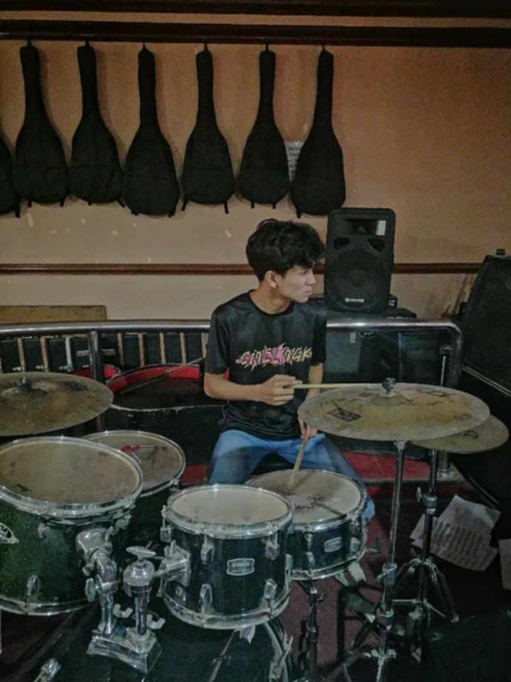
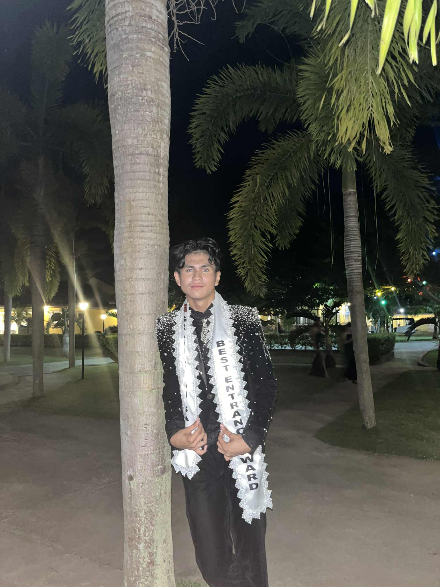
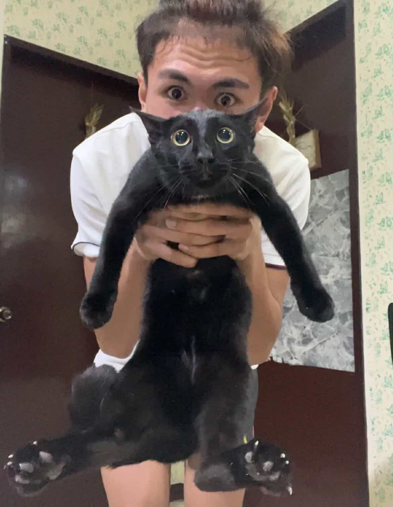

Basketball
I enjoy playing basketball regularly. It helps me stay active, build teamwork skills, and relieve stress. Playing matches with friends or varsity teams is always exciting and challenging.

I enjoy playing basketball regularly. It helps me stay active, build teamwork skills, and relieve stress. Playing matches with friends or varsity teams is always exciting and challenging.
I love working out to keep my body healthy and strong. I focus on strength training, cardio, and flexibility exercises. It also gives me mental energy to tackle daily tasks and academic challenges.

I enjoy playing musical instruments in my free time. It’s relaxing and allows me to be creative. Music also helps me focus and gives me a sense of accomplishment when I learn new songs.
Facecard is always important for men...
My cat is my therapy, since people see both of us as twins.
